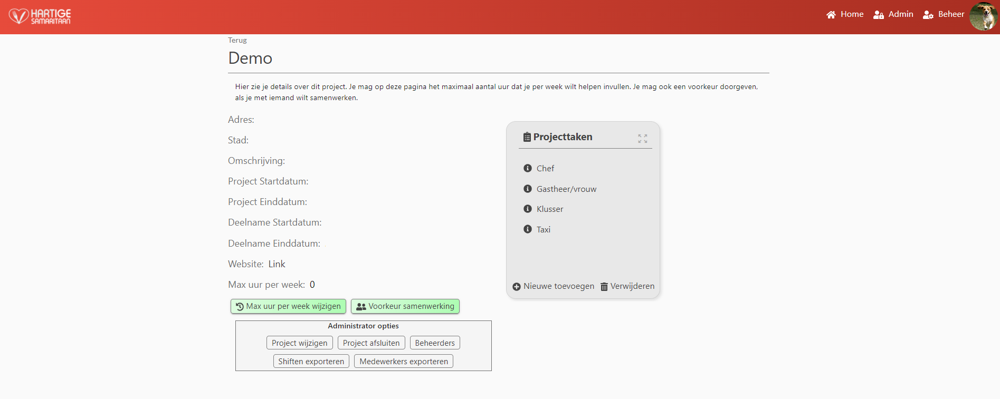

Projectpage

This page displays information about a project.
Depending on the type of user (participant, manager, administrator), different options are show.
participant:
A participant is able to see the following information about a project:
- Name of the project (in the title bar);
- Address where the project is located;
- City where the project is located;
- Description containing a summary about the project;
- Participation startdate (deelname startdatum);
- Participation enddate (deelname einddatum);
- A link to a specific webpage (if available);
- The maximum number of hours per week the participant is willing to participate.
A participant has two options on this page:
- Change the maximum number of hours per week he or she is willing to participate;
- Give a preference about which people the participant would like to work with.
Each option opens a modal in which the participant is able to enter data and submit.
On this page there is also a projecttaskcard which displays all projecttasks associated with this project.
Clicking on a individual task will redirect the participants to a task-details page.
Manager
A manager has similar options as a participant
The manager is unable to change the maximum number of participation hours. (unless he is also a participant in the project)
The manager is unable to give a preference about who he would like to work with. (unless he is also a participant in the project)
The manager has the option to add or delete projecttasks to the project bij clicking Nieuwe toevoegen or Verwijderen in the projecttaskcard.
Administrator
An administrator has the same options as a manager and also has the following extra options:
An administrator is able to change the details of a project by clicking Project wijzigen.
A modal will open in which the administrator can change the project details.
An administrator can close a project by clicking Project afsluiten.
Closed projects will not be displayed in the dashboard of participants nor on the manage page of managers.
Once closed a project can be reopend by clicking the button again.
An administrator can add managers to a project by clicking Beheerders.
This option also allows managers to be removed.
A modal wil open in which the administrator can select users to be removed or added to the project as a manager.
The functionality works similarly as adding an administrator on the adminpage.
An administrator is able to export shifts and all related data by clicking shiften exporteren.
An administrator is also able to export data about participants of a project by clicking medewerkers exporteren.